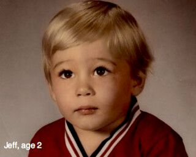
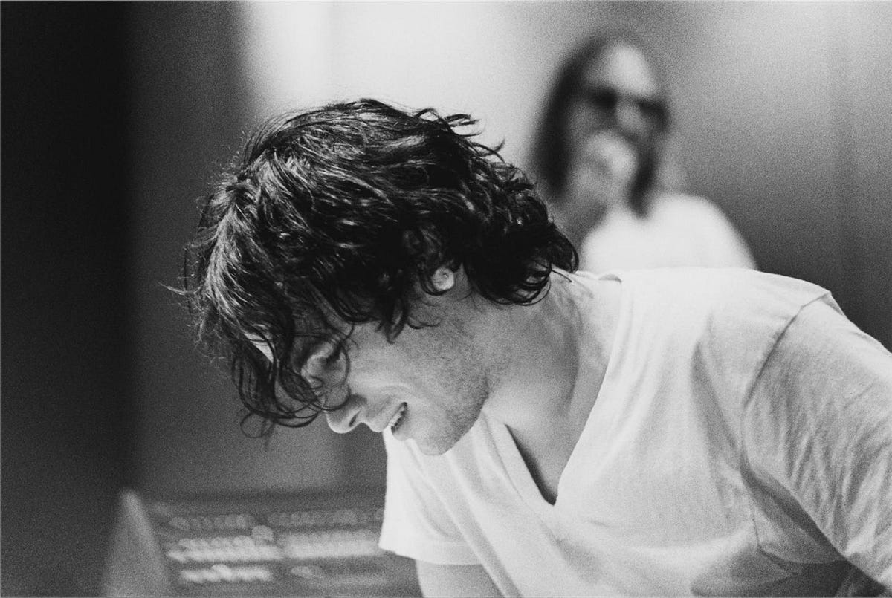
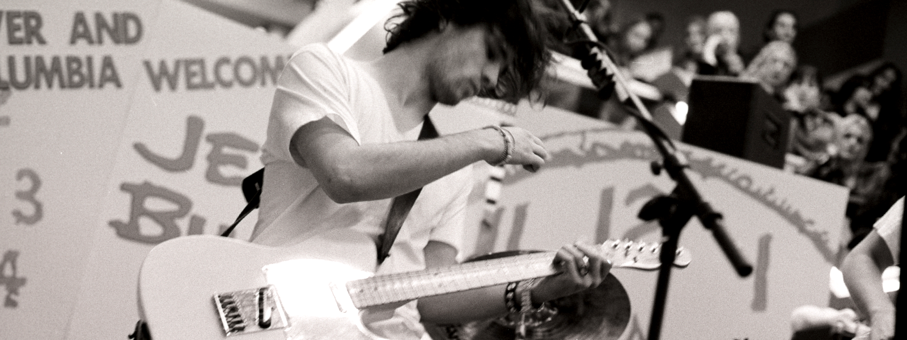

Jeffrey Scott Buckley (raised as Scott Moorhead; November 17, 1966 – May 29, 1997) was an American musician. After a decade as a session guitarist in Los Angeles, Buckley amassed a moderate following in the early 1990s performing at venues in East Village, Manhattan such as Sin-é.
After rebuffing interest from record labels and Herb Cohen—the manager of his father, singer Tim Buckley—he signed with Columbia, recruited a band, and released his only studio album, Grace, in 1994./p>
Background Information
Birth name: Jeffrey Scott Buckley
Also known as: Scott "Scottie" Moorhead
Born: November 17, 1966 in Anaheim, California, U.S.
Died: May 29, 1997 (aged 30) in Memphis, Tennessee, U.S.
Discography: See discography
Early life
Born in Anaheim, California, Buckley was the only son of Mary (née Guibert) and the singer-songwriter Tim Buckley.
His mother was a Zonian of Greek, English, French and Panamanian descent,[6] while his father was the son of an Irish American father and an Italian American mother.[7] Buckley was raised by his mother and stepfather, Ron Moorhead, in Southern California, and had a half-brother, Corey Moorhead.[8][9] Buckley moved many times in and around Orange County while growing up, an upbringing he called "rootless trailer trash".[10] As a child, Buckley was known as Scott "Scottie" Moorhead, based on his middle name and his stepfather's surname.
After graduating from high school, Buckley moved to Hollywood to attend the Musicians Institute,[27] completing a one-year course at age 19.[28] Buckley later said the school was "the biggest waste of time",[17] but said in another interview that he had appreciated studying music theory: "I was attracted to really interesting harmonies, stuff that I would hear in Ravel, Ellington, Bartók."[29]
Buckley's biological father, Tim Buckley, released a series of folk and jazz albums in the late 1960s and early 1970s. Jeff said they met only once, when he was eight.[11] After Tim died of a drug overdose in 1975,[12] Jeff chose to go by Buckley and his given name "Jeff", which he found on his birth certificate.[13] To members of his family he remained "Scottie".[14]
After graduating from high school, Buckley moved to Hollywood to attend the Musicians Institute,[27] completing a one-year course at age 19.[28] Buckley later said the school was "the biggest waste of time",[17] but said in another interview that he had appreciated studying music theory: "I was attracted to really interesting harmonies, stuff that I would hear in Ravel, Ellington, Bartók."[29]
Career
In Los Angeles, Buckley spent six years working in a hotel and playing guitar in various bands, playing in styles from jazz, reggae, and roots rock to heavy metal.[30] He toured with the dancehall reggae artist Shinehead[31] and played occasional funk and R&B studio sessions, collaborating with the fledgling producer Michael J. Clouse to form X-Factor Productions.[32] From 1988 to 1989, Buckley played in a band, the Wild Blue Yonder, that included John Humphrey and future Tool member Danny Carey.[33] Buckley limited his singing to backing vocals.[34]
Buckley moved to New York City in February 1990[35] but found few opportunities to work as a musician. He was introduced to Qawwali, the Sufi devotional music of Pakistan, and Nusrat Fateh Ali Khan, one of its best-known singers.[36] Buckley was an impassioned fan of Khan,[37] and during what he called his "café days", he often covered Khan's songs. In January 1996, he interviewed Khan for Interview and wrote liner notes for Khan's Supreme Collection, Vol. 1 compilation. He also became interested in the blues musician Robert Johnson and the hardcore punk band Bad Brains during this time.[16]
Grace

In mid-1993, Buckley began working on his first album with record producer Andy Wallace. Buckley assembled a band, composed of bassist Mick Grøndahl and drummer Matt Johnson, and spent several weeks rehearsing.[62][63]
In September, the trio headed to Bearsville Studios in Woodstock, New York, to spend six weeks recording basic tracks for what would become Grace. Buckley invited ex-bandmate Lucas to play guitar on the songs "Grace" and "Mojo Pin", and Woodstock-based jazz musician Karl Berger wrote and conducted string arrangements with Buckley assisting at times.[64] Buckley returned home for overdubbing at studios in Manhattan and New Jersey, where he performed take after take to capture the perfect vocals and experimented with ideas for additional instruments and added textures to the songs.[65]
Sales of Grace were slow, and it garnered little radio airplay despite critical acclaim.[77] The Sydney Morning Herald proclaimed it "a romantic masterpiece" and a "pivotal, defining work".[78] Despite slow initial sales, the album went gold in France and Australia over the next two years,[69] achieved gold status in the U.S. in 2002,[79] and sold over six times platinum in Australia in 2006.[80]
Grace won appreciation from a number of revered musicians and artists, including members of Buckley's biggest influence, Led Zeppelin.[81] Jimmy Page considered Grace close to being his "favorite album of the decade".[82] Robert Plant was also complimentary,[83] as was Brad Pitt, saying of Buckley's work, "There's an undercurrent to his music, there's something you can't pinpoint. Like the best of films, or the best of art, there's something going on underneath, and there's a truth there. And I find his stuff absolutely haunting. It just ... it's under my skin."[84] Others who had influenced Buckley's music lauded him:[85] Bob Dylan named Buckley "one of the great songwriters of this decade",[83] and, in an interview with The Village Voice, David Bowie named Grace one of 10 albums he would bring with him to a desert island.[86] In 2010, the Smiths singer Morrissey, one of Buckley's influences, named Grace one of his favorite albums.[87]
Concert tours
Buckley spent much of the next year and a half touring internationally to promote Grace. Following Buckley's Peyote Radio Theater tour, the band began a European tour on August 23, 1994, starting with performances in the UK and Ireland. The tour continued in Scandinavia and, throughout September, numerous concerts in Germany were played. The tour ended on September 22 with a concert in Paris. A gig on September 24 in New York dovetailed with the end of the European tour and Buckley and band spent the next month relaxing and rehearsing.[88][failed verification] 
Following Johnson's departure, the band, now without a drummer, was put on hold and did not perform live again until February 12, 1997.[95] Due to the pressure from extensive touring, Buckley spent the majority of the year away from the stage. However, from May 2 to 5, he played a short stint as bass guitarist with Mind Science of the Mind, with friend Nathan Larson, then guitarist of Shudder to Think.[69] Buckley returned to playing live concerts when he went on his "phantom solo tour" of cafés in the northeast U.S. in December 1996, appearing under a series of aliases: the Crackrobats, Possessed by Elves, Father Demo, Smackrobiotic, the Halfspeeds, Crit-Club, Topless America, Martha & the Nicotines, and A Puppet Show Named Julio.[88] By way of justification, Buckley posted a note stating he missed the anonymity of playing in cafés and local bars:
There was a time in my life not too long ago when I could show up in a café and simply do what I do, make music, learn from performing my music, explore what it means to me, i.e., have fun while I irritate and/or entertain an audience who don't know me or what I am about. In this situation I have that precious and irreplaceable luxury of failure, of risk, of surrender. I worked very hard to get this kind of thing together, this work forum. I loved it and then I missed it when it disappeared. All I am doing is reclaiming it.[96]
Discography
This is a discography for the American singer-songwriter and guitarist Jeff Buckley.
Albums
Grace
EPs
Live at Sine-é
Eternal Life
Live from the Bataclan